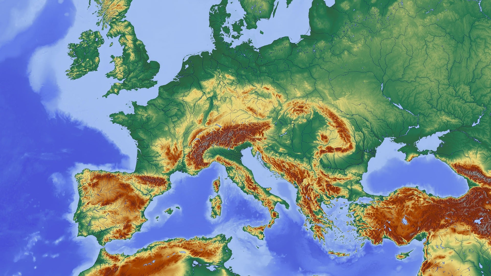

Én most európáról fogok írni és annak éredességeiről, jellemzőiről, országairól. A szöveg mellé képeket is fogok rakni hogy jobban érthető és látható legyen.

Európa a Föld 2. legisebb kontinense.Legnagyobb országai, Németország, Franciaország, Oroszország és Spanyolország.
Egyik legnagyobb városa London, Anglia fővárosa, itt található a Brithis Muzeum a világ legnagyobb, legrégebbi és legszínesebb.
tudj meg többet!
| Ország | Főváros | Pénznem |
|---|---|---|
| Németország | Berlin | Euró |
| Spanyolország | Madrid | Euró |
| Dánia | Koppenhága | Euró |